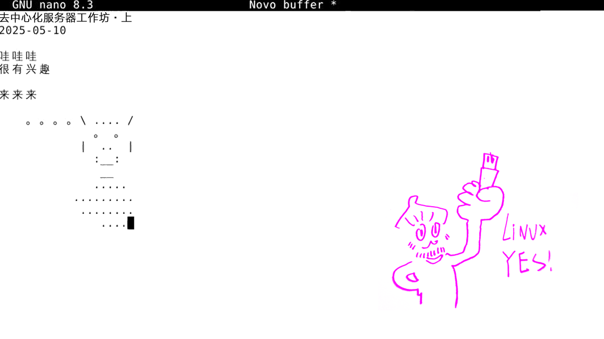

巴西艺术家Lucas的工作坊聚焦于搭建自管理服务器。它探索和实践自由开源软件和Linux操作系统。工作坊组织者还尝试利用这些成果协作创建内容并上传到他们自建的服务器。（有趣的是，透明社会所在的空间从未接入互联网。） Brazilian artist Lucas's workshop focuses on building a self-managed server. It explores and practices free and open-source software and the Linux operating system. The workshop organizers also attempt to use these results to collaboratively create content and upload it to their self-built server. (Interestingly, the space where the Transparent Society is located has never been connected to the internet.)